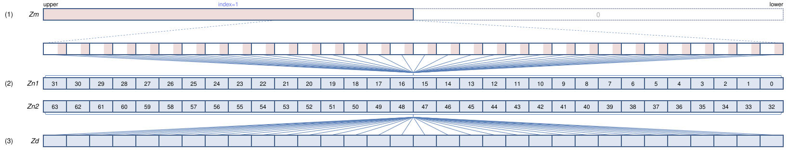
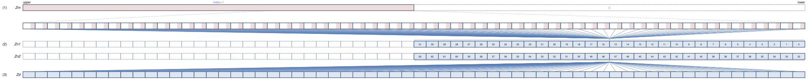
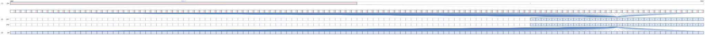

SVE Instruction List by Dougall Johnson
LUTI6: Lookup table read with 6-bit indices
LUTI6 Zd.H, { Zn1.H, Zn2.H }, Zm[index] (SVE2.3 (SME2.3
128-bit SVE
This operation is undefined for 128-bit SVE.
256-bit SVE
This operation is undefined for 256-bit SVE.
512-bit SVE

For each 16-bit element, use a 6-bit index from a segment of (1) to look up a 16-bit element from the two-register table (2), writing the result to (3). The segment is selected by the immediate index.
Larger sizes
1024-bit SVE

For each 16-bit element, use a 6-bit index from a segment of (1) to look up a 16-bit element from the two-register table (2), writing the result to (3). The segment is selected by the immediate index.
2048-bit SVE

For each 16-bit element, use a 6-bit index from a segment of (1) to look up a 16-bit element from the two-register table (2), writing the result to (3). The segment is selected by the immediate index.
Report mistakes or give feedback
Inspired by and based on the x86/x64 SIMD Instruction List by Daytime.